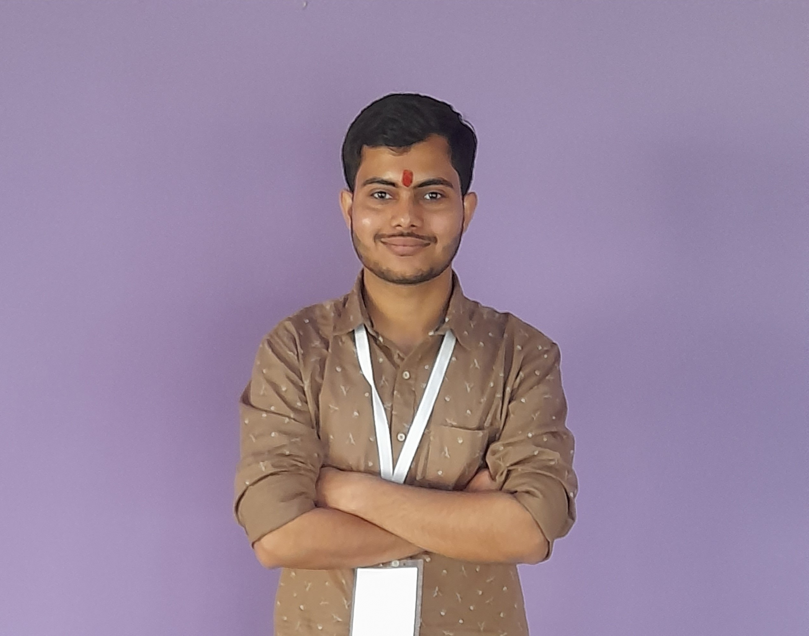

Hello, I'm
Divyam Kumar Choubey
a
CSE student at NIT Manipur passionate about Full-Stack Development, AI-driven Systems, and Software Engineering. Skilled in Python, C/C++, JavaScript, React.js, Node.js, MongoDB, DSA, and OOP, with hands-on experience building scalable web applications and intelligent systems including MERN Stack platforms and machine learning-based watermarking solutions. Actively seeking opportunities to apply and expand technical expertise through impactful real-world development.

About Me
I am a passionate Computer Science & Engineering student at the National Institute of Technology, Manipur, with strong interest in Full-Stack Web Development, Artificial Intelligence, Machine Learning, and Software Engineering. My academic focus is building solid foundations in Data Structures & Algorithms (DSA), Object-Oriented Programming (OOP), Database Management Systems (DBMS), Computer Networks, and the Software Development Life Cycle (SDLC) to engineer scalable and innovative solutions.
My technical skill set includes Python, C, C++, JavaScript, React.js, Node.js, Express.js, MongoDB, HTML5, CSS3, Tailwind CSS, and SQL. I apply these technologies in real-world projects such as developing CSEducation, a modern MERN Stack academic resource portal, and AquaMark, an intelligent image watermarking system integrating machine learning-based integrity prediction for secure multimedia verification.
I am highly interested in building modern, responsive, and secure applications with clean architecture and intuitive user experiences. Alongside full-stack development, I actively explore Cybersecurity, AI-driven Systems, Digital Watermarking, and Predictive Modeling to expand my understanding of emerging technologies and secure software practices.
I have also completed a Virtual Internship in Ethical Hacking & Penetration Testing from CDAC Noida, strengthening my practical knowledge of cybersecurity concepts and system protection techniques.
Actively seeking challenging software development and engineering internship opportunities, I am eager to contribute, learn industry-level practices, and further enhance my technical and problem-solving abilities through impactful real-world projects.
Technical Skills
Languages
- Python
- C | C++
- Java (Basic)
- HTML5
- CSS3
- JavaScript
Frameworks & Concepts
- React
- Django
- DSA & OOP
- SDLC
- Computer Networks
- DBMS
- Operating System
Databases & Tools
- MySQL
- MongoDB
- Git
- MS Excel & PowerPoint
- SQL
Projects
Flappy Bird Clone
Developed a browser-playable version of the classic Flappy Bird game using Python (Pygame).
- Implemented core mechanics: gravity, jumping, obstacle generation, and collision detection.
- Applied Object-Oriented Programming principles for modular and maintainable code.
- Deployed the game to the web using Pygbag (WebAssembly).
Professional Developer Portfolio
A modern, responsive personal portfolio designed to showcase academic history, technical skills, and key projects to potential employers.
- Engineered using clean, semantic HTML5, CSS3, and JavaScript from scratch.
- Implemented full responsive design (mobile-first approach) using CSS Media Queries.
- Enhanced user experience with a dynamic typing effect in the Hero section using Typed.js.
- Styled with a professional dark-mode theme, utilizing Google Fonts and Font Awesome for a high-class aesthetic.
- Includes dedicated sections for About Me, Skills (React, Django, DSA), Education, and Contact information.
AquaMark AI - Intelligent Invisible Watermarking Platform
A full-stack AI-powered watermarking system designed to embed and verify invisible watermarks in images for authenticity protection and tamper detection.
- Engineered a complete end-to-end workflow using React, Vite, Node.js (Express), and Python for invisible watermark embedding and verification.
- Integrated a PyTorch-based encoder-decoder model to perform robust watermark embedding with tamper detection and integrity verification.
- Implemented secure REST API pipelines for watermark embedding, verification, and downloadable output generation.
- Added advanced quality and trust metrics including PSNR, SSIM, BER, confidence score, and integrity probabilities for detailed performance evaluation.
- Designed a modern, fully responsive user interface with dedicated Embedding Studio and Verification Lab for intuitive real-time testing.
- Incorporated model health monitoring through checkpoint status detection to indicate trained versus baseline inference mode.
CSEducation — Academic Resource Portal
A modern, scalable academic platform designed to centralize semester-wise study materials, previous year question papers, books, and curated reference resources for Computer Science & Engineering students.
- Developed a complete MERN Stack application (MongoDB, Express.js, React, and Node.js) for streamlined academic resource management.
- Implemented structured modules for Notes, PYQs, Books, and Reference Materials with semester-wise and subject-wise categorization.
- Built secure JWT-based authentication and protected admin dashboards for authorized content upload and management.
- Designed a modern, fully responsive user interface using React, Tailwind CSS, Framer Motion, and Vite with dark/light theme support.
- Enhanced user experience with glassmorphism-inspired UI components, animated transitions, skeleton loaders, toast notifications, and scroll progress indicators.
- Engineered scalable backend architecture using Express.js REST APIs, MongoDB database schemas, Mongoose ODM, and Axios-based API integration.
- Implemented dedicated sections for Semester Browser, Subject Viewer, PYQ Archive, Resource Explorer, Contact System, and Admin Management Panel.
- Structured the project following industry-standard clean architecture and modular development practices for maintainability and future scalability.
Education & Certifications
B.Tech. in Computer Science & Engineering
National Institute of Technology, Manipur
2023 - Present
CGPA: 8.95/10
Intermediate (Science)
A.N. COLLEGE, Patna
2021 - 2023
Percentage: 83.2%
Matriculation
Utkramit MS Haruwadanga, Dighalbank
2020 - 2021
Percentage: 96.2%
Virtual Internship: Ethical Hacking & Penetration Testing
CDAC Noida
19 Aug 2024 - 3 Oct 2024
Get In Touch
I'm currently looking for an internship and am open to discussing new opportunities. Feel free to reach out!